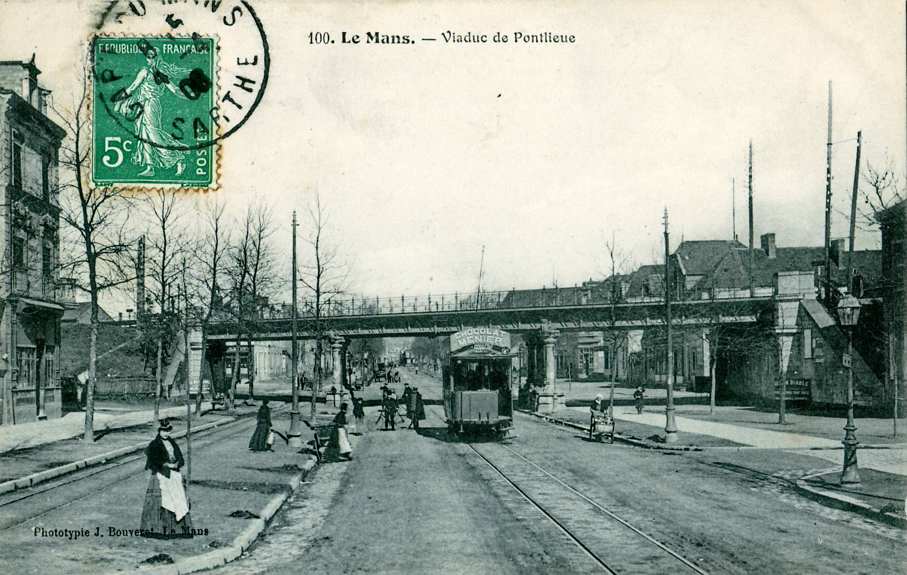

Le chemin de fer dit à voies étroites
Le métrique: 1000mm
Les chemins de fer à voies métrique étaient répandus dans les années 1900, car ils permettaient de faire passer des trains dans beaucoup de lieux inaccessible par le train à écartement standard (1,435m) dû aux fortes montées et courbes. Ces trains étaient aussi utilisés en ville pour faciliter les déplacements.
L'époque des tramways: départementaux et urbains
Les tramways urbains
Beaucoup de grandes villes françaises possédaient au début du XXéme siècle un réseau de tramway urbains, tel que: Le Mans, Rennes ou bien Paris. La ville du Mans possédaient 4 lignes, contre 2 de nos jours. Le fameux pont en X est un ouvrage d'art créé par Harel de La Noë, qui permettait de croiser les voies du tramway urbain et du départemental. Ce pont a disparu en 1945 avec les tramways urbains et départementaux.
Un tramway du Mans, ici devant le pont ferroviaire à Pontlieue.
Actuellement le tramway moderne du Mans passe ici mais tourne après le pont en direction de la gare contrairement à l'ancien qui prenait la rue nationale.
Les Tramways départementaux
Au début du XXème siécle, en Sarthe, il y avait un réseau de Tramway départemental composé de plusieurs lignes centrées sur Le Mans. De nos jours ces lignes correspondent environs au bus Aléop, chose normal puisque avant la disparition des Tramways de la Sarthe, la Société des Transports Automobiles de l'Ouest (STAO) fut fondée. La STAO utilisa les mêmes parcours pour les lignes de car.
Une carte interactive du réseau des Tramways de la Sarthe.
Leur fin due à la voiture et aux autoroutes
Pendant l'entre-guerre, l'arrivée de l'automobile a contribué à la disparition de ces réseaux départementaux ainsi que des réseaux urbains.
La voiture étant un moyen de déplacement que l'on peut utiliser quand bon nous semble sans horaires, c'est devenu un moyen de déplacement plus intéressant que les tramways.
Mais quelques lignes métrique subsistent, celle du Mont-Blanc, le train-jaune dans les Pyrénées ou bien le train du Blanc à Argent (qui va seulement de Salbris à Buzançais).
Il reste des traces de ces tramways, par exemple le viaduc de Saint-Georges-le-Gaultier (Sarthe) ou bien les remises de Brezolles (Eure-et-Loir) aisni que le materiel conservé comme à Connerré à la Transvap.